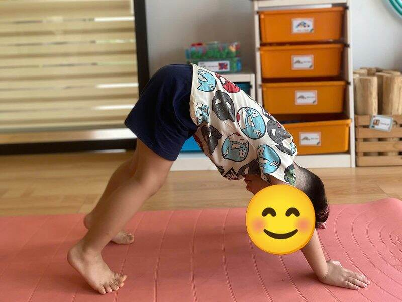
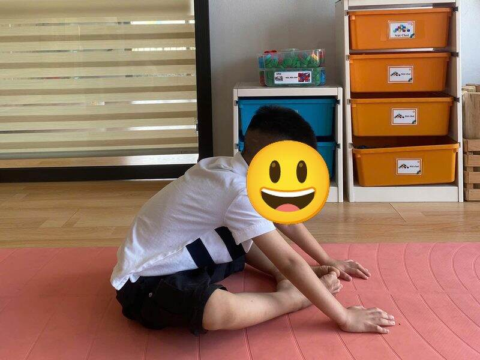
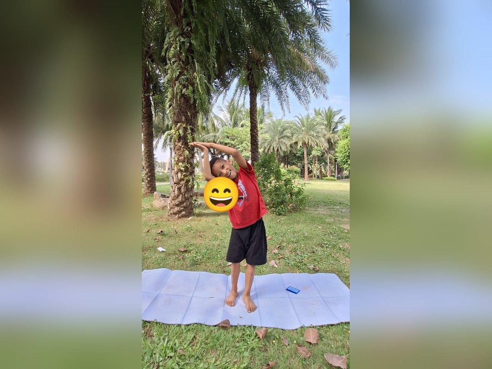

Chủ đề 36 · Thiên nhiên quanh bé
Giọt Nước đi du lịch
🌟 Bài học trong câu chuyện
Giới luật yoga: Ishvara Pranidhana – Biết ơn và tin tưởng. Bé biết nói lời cảm ơn và tin vào những điều tốt đẹp.
Kỹ năng sống: Quan sát thiên nhiên, biết ơn cây cỏ.
1. Khởi động (2 phút)
Cả lớp ngồi xếp bằng thành vòng tròn. Cùng thở 3 hơi thở bông hoa: hít vào bằng mũi như ngửi hoa, thở ra bằng miệng thật chậm. Chắp tay trước ngực và chào nhau: “Namaste, chào các bạn!”
2. Câu chuyện: Giọt Nước đi du lịch (đọc cho bé nghe, 4 phút)
Cô đọc trọn câu chuyện cho bé nghe trước. Sau đó cô kể lại từng đoạn ngắn và cả lớp cùng tập 10 tư thế ở phần bên dưới.
Trên đám mây trắng có một Giọt Nước nhỏ. Giọt Nước tò mò lắm, muốn đi du lịch khắp nơi xem thiên nhiên đẹp thế nào. Ông mặt trời sưởi ấm Giọt Nước: "Đi đi cháu, rồi nhớ kể cho ông nghe".
Giọt Nước rơi xuống tán cây xanh. Cây khẽ rung lá: "Cảm ơn bạn đã cho mình uống nước". Giọt Nước lăn xuống sườn núi cao, rồi nhập vào dòng sông, chảy mãi về xuôi.
Hai bên bờ sông, những bông hoa nở tươi nhờ có nước. Giọt Nước đọng lại trên một hòn đá tròn, nhìn ngắm xung quanh: có chim hót, có bướm bay, có cỏ xanh mướt. Giọt Nước chợt nhớ quê nhà trên đám mây.
Gió thổi "vù vù", đưa Giọt Nước bay lên cao. Nắng chiếu qua, Giọt Nước cùng hàng nghìn bạn giọt nước khác tạo thành một chiếc cầu vồng bảy sắc rực rỡ!
Đêm xuống, Giọt Nước về lại đám mây, nhìn những ngôi sao lấp lánh. Giọt Nước kể cho ông mặt trời nghe mọi điều đã thấy, rồi thì thầm: "Cảm ơn thiên nhiên. Mỗi thứ đều giúp đỡ nhau, thật là đẹp".
3. Kể lại và tập 10 tư thế (6 phút)
-
 1
1Mặt trời
🧘 Tư thế Chào mặt trời (Sun Salutation)
Lời kể khi tập: Ông mặt trời sưởi ấm Giọt Nước. "Chào ông mặt trời!"
Cách làm: Đứng thẳng, hít vào vươn hai tay lên cao chào mặt trời, thở ra cúi gập người, hai tay chạm chân hoặc chống lên viên gạch như trong ảnh, rồi hít vào từ từ đứng lên. Giữ 3 đến 5 nhịp thở.
-
 2
2Cây xanh
🧘 Tư thế Cái cây (Tree)
Lời kể khi tập: Giọt Nước rơi xuống tán cây xanh. Cây cảm ơn: "Cảm ơn bạn cho mình uống nước".
Cách làm: Đứng một chân, bàn chân kia đặt vào bắp chân hoặc đùi (không đặt lên đầu gối), hai tay chắp trên đầu. Giữ 3 đến 5 nhịp thở.
-

3Ngọn núi
🧘 Tư thế Chó úp mặt (Downward Dog)
Lời kể khi tập: Giọt Nước lăn xuống sườn núi cao.
Cách làm: Chống hai tay và hai chân xuống thảm, nâng mông lên cao, người thành hình tam giác. Giữ 3 đến 5 nhịp thở.
-

4Dòng sông
🧘 Tư thế Gập người ngồi (Seated Forward Fold)
Lời kể khi tập: Giọt Nước theo dòng sông chảy về xuôi.
Cách làm: Ngồi duỗi thẳng hai chân, hít vào vươn tay lên, thở ra cúi người về trước, tay với về phía ngón chân. Giữ 3 đến 5 nhịp thở.
-
 5
5Bông hoa
🧘 Tư thế Hoa sen (Lotus)
Lời kể khi tập: Bông hoa ven sông nở tươi nhờ có nước.
Cách làm: Ngồi xếp bằng, lưng thẳng, hai tay đặt trên gối, ngón cái chạm ngón trỏ như búp sen, thở thật chậm. Giữ 3 đến 5 nhịp thở.
-
 6
6Đám mây
🧘 Tư thế Em bé (Child's Pose)
Lời kể khi tập: Giọt Nước nhớ quê nhà trên đám mây.
Cách làm: Quỳ gối, ngồi lên gót chân, cúi người cho trán chạm thảm, hai tay duỗi ra trước hoặc để xuôi bên người. Giữ 3 đến 5 nhịp thở.
-

7Cơn gió
🧘 Tư thế Nghiêng người hình trăng (Crescent Moon)
Lời kể khi tập: Gió thổi "vù vù" đưa Giọt Nước bay lên.
Cách làm: Đứng thẳng, hai tay vòng lên trên đầu, nghiêng người sang một bên như vầng trăng khuyết. Đổi bên. Giữ 3 đến 5 nhịp thở.
-
 8
8Hòn đá
🧘 Tư thế Ôm gối tròn (Ball)
Lời kể khi tập: Giọt Nước đọng trên hòn đá tròn, nhìn quanh.
Cách làm: Ngồi hoặc nằm, ôm hai gối sát vào ngực, cuộn tròn người như quả bóng. Giữ 3 đến 5 nhịp thở.
-
 9
9Cầu vồng
🧘 Tư thế Cây cầu (Bridge)
Lời kể khi tập: Nắng chiếu qua, Giọt Nước cùng các bạn tạo thành cầu vồng!
Cách làm: Nằm ngửa, co gối, bàn chân đặt trên sàn, nâng hông lên cao như cây cầu. Giữ 3 đến 5 nhịp thở.
-
 10
10Ngôi sao
🧘 Tư thế Ngôi sao (Star)
Lời kể khi tập: Đêm xuống, Giọt Nước nhìn sao và nói: "Cảm ơn thiên nhiên thật đẹp!"
Cách làm: Đứng dang rộng hai chân, hai tay dang ngang thật thẳng, cả người thành ngôi sao năm cánh. Giữ 3 đến 5 nhịp thở.
4. Thư giãn (2 phút)
Các con nằm ngửa, tay chân thả lỏng, nhắm mắt lại. Cô nói nhẹ: “Hít vào thật chậm… thở ra thật chậm… Con nhớ lại câu chuyện vừa rồi, nhớ người bạn mình thích nhất trong truyện. Cơ thể con mềm như bông, nhẹ như mây.” Sau đó các con nghiêng người, từ từ ngồi dậy.
5. Trò chuyện cùng bé (1 phút)
Mọi thứ trong thiên nhiên đều giúp đỡ nhau, và mình biết ơn thiên nhiên. Biết ơn là Ishvara Pranidhana.
Cô hỏi các con:
- Con thấy gì đẹp khi ra ngoài trời?
- Cây cần gì để lớn?
Kết thúc bằng lời chào “Namaste” và một nụ cười.
Lưu ý cho thầy cô và bố mẹ: Tập trên thảm, không tập ngay sau khi ăn no. Bé chỉ làm tới mức thấy dễ chịu, không ép bé. Tư thế đứng một chân có thể cho bé vịn tường hoặc vịn tay người lớn.